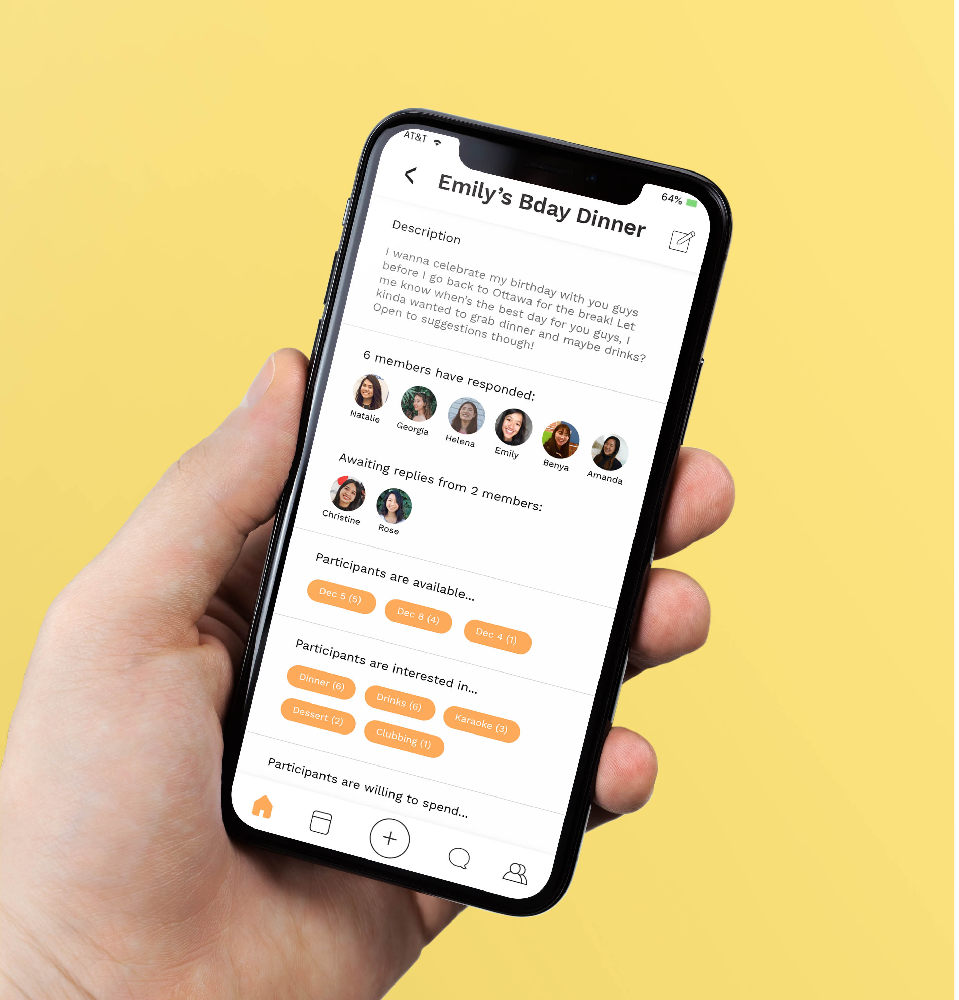
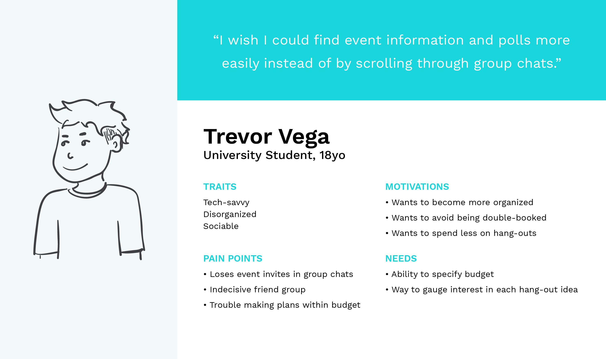
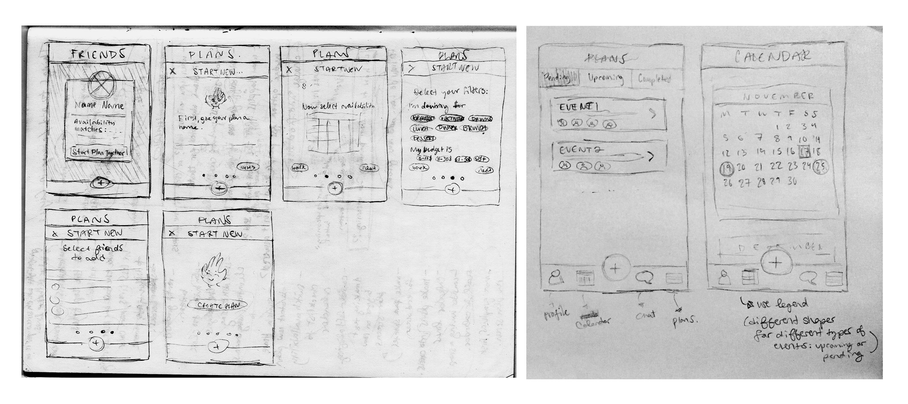
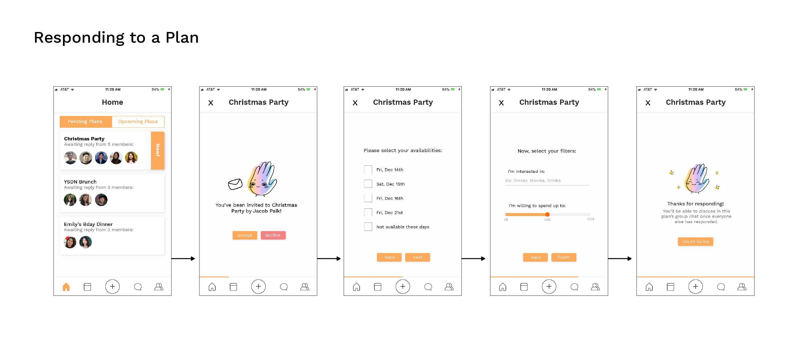
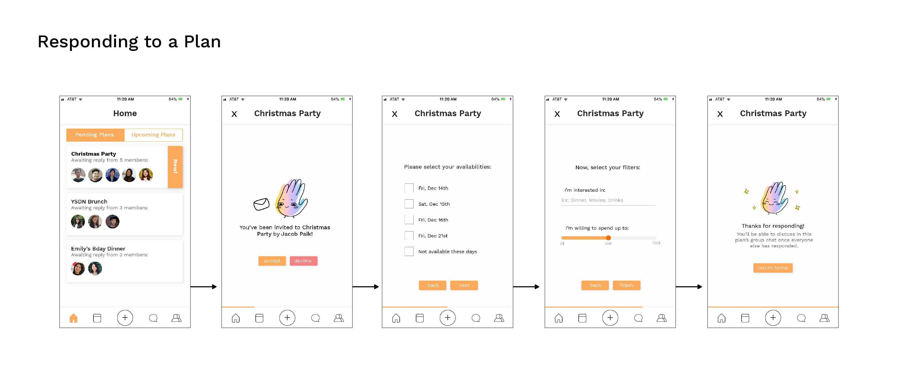

Jul-Sep '20 (12 weeks)
Figma, Adobe Illustrator
Immigrants and their descendants are heavily encouraged to adapt to American/Canadian culture and assimilate and become disconnected from their original cultures as a result. As they approach adulthood, they become more aware of this and they seek to better understand their own cultural identities, but don’t know where or how to learn more about the countries and cultures their families came from.
Globowl is an educational app that uses short video lessons to teach its users about different cultures through the lens of food and cuisine.
When creating or replying to a plan, users have the option to select tags that represent what they are interested in. This can be for types of activities or for particular locations. Ciyu also features a budget slider that allows users to easily select how much they’re willing to spend at a given event. All of this information is collected from each participant before creating a chat for the event to ensure that everyone has answered all the important questions. Users can also view upcoming and pending plans in the Calendar as well as view matching availabilities with friends, which encourages them to make plans together.
I wanted to better understand my users and their problems in order to create my app, so I talked to other students and working people about the ways in which they go about planning events among friends. Based on these conversations, I made two user personas :

I went through a few iterations of designs since my original ones were very flat and buttons didn't look like they were buttons. I also pared down the colors a bit and made the app mostly white, using the colors more for accents than for backgrounds.



 

The app uses a mostly warm color palette that reflects a friendly and inviting feel. The shapes used in the backgrounds and illustrations were created to evoke different tastes, sounds and smells one might experience in the kitchen. Key concepts and words are visually highlighted to aid users in retaining what they’ve learned. The illustrations are playful, but still realistic enough to be recognizable.
Throughout this process, I’ve learned how important it is to keep in mind the user personas when designing in order to make
target-centric decisions. The research that I did before my ideation phase was really key to figuring out which features were
most important and how they should be implemented.
Something that I‘d like to develop further is the events page: how
RSVPing works, viewing the numbers of attendees at events, as well as how bonus recipes are redeemed after events/how to
verify that someone has attended an event. I would also like to work more on the idea of a journal/photo album where users can
store photos of the recipes they have attempted, and possibly share them and view others’ attempts.
The Figma prototype can be viewed here.